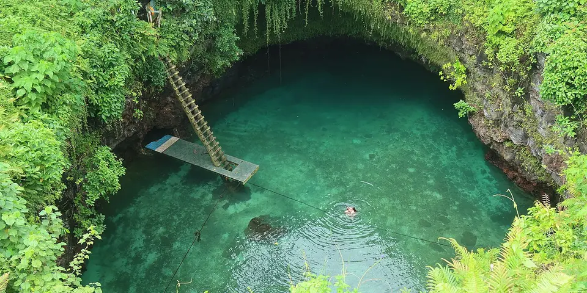

Oceania
Samoa on a budget
Open-sided beach fale huts with meals included, freshwater swimming holes and traditional Polynesian village life on two green islands.
Photo: Gelu Purcelu, CC BY-SA 4.0, via Wikimedia Commons

Classic route
Upolu, then ferry to Savai'i. 10 days.
Before you go
Flights to Upolu: Skyscanner · Kiwi.com · Google Flights
Hostels and guesthouses in Upolu · Savai'i · Apia · Lalomanu
Tours and tickets: Upolu · Savai'i
Mobile data: Samoa eSIM
Travel insurance: SafetyWing
How much 9 places in Samoa cost
Daily budgets per person in US dollars: a hostel dorm or simple guesthouse, local food, local transport and the usual entry fees.
-
Upolu
Climb down a ladder into the To Sua Ocean Trench, then sleep in beach fales with meals included on the south coast.
Bed $40 · Food $0 · Getting around $6 · Extras $6
Budget tip: Beach fales usually include dinner and breakfast. Villages charge small fees for beaches and pools, so carry small change.
$52per day -
Savai'i
Black lava fields, the roaring Alofaaga Blowholes and quiet beaches on Samoa's bigger, sleepier island.
Bed $40 · Food $0 · Getting around $6 · Extras $4
Budget tip: Buses are cheap but run on 'island time'. Sharing a rental car with others lets you see more in a day.
$50per day -
Apia
A small, friendly capital with Robert Louis Stevenson's hilltop house, Sunday church singing and a lively food market.
Bed $30 · Food $10 · Getting around $3 · Extras $3
Budget tip: Eat oka (raw fish in coconut cream) and pani popo at the Maketi Fou market for a few tala.
$46per day -
Lalomanu
A white-sand beach on Upolu's south-east tip, lined with open-sided beach fales where the sea breeze is your air conditioning.
Bed $45 · Food $0 · Getting around $5 · Extras $3
Budget tip: Fales include two meals a day; bring cash as there are no ATMs nearby, and pack a mosquito net just in case.
$53per day -
Manono Island
A car-free island where a single footpath loops past village homes, churches and beaches, and life runs at an easy pace.
Bed $40 · Food $0 · Getting around $5 · Extras $3
Budget tip: Small boats leave from the wharf near the Upolu ferry terminal. Stay overnight in a beach fale to see village life after the day visitors leave.
$48per day -
Falealupo
Savai'i's western tip, with a rainforest canopy walkway, lava-rock coastline and the spot where the sun is said to set last each day.
Bed $40 · Food $0 · Getting around $6 · Extras $4
Budget tip: Pay the small village custom fees in cash at each site, and stay in a beach fale nearby to catch the sunset.
$50per day -
Alofaaga Blowholes
Lava-shelf blowholes on Savai'i's south coast near Taga, where seawater bursts high into the air and guides launch coconuts on the spray.
Bed $40 · Food $0 · Getting around $6 · Extras $4
Budget tip: Pay the small village fee at the entrance and come when the swell is strong; nearby beach fales usually include meals.
$50per day -
Lake Lanoto'o
A deep crater lake in the Upolu highlands, ringed by misty cloud forest and home to wild goldfish that flash orange in the water.
Bed $30 · Food $10 · Getting around $15 · Extras $5
Budget tip: The trail is muddy and unmarked in places; go with a local guide and wear shoes you do not mind ruining.
$60per day -
To Sua Ocean Trench
Deep pool of turquoise seawater in Lotofaga, reached by a tall wooden ladder and surrounded by gardens and coastal lava blowholes.
Bed $40 · Food $10 · Getting around $5 · Extras $7
Budget tip: Go early before tour groups arrive and swim near mid tide; combine it with Lalomanu beach fales on the same bus route.
$62per day
Know before you go
Samoa on a budget: the basics
Currency
$1 = 2.75 WST
Samoan tālā
| Dollars to WST | WST to dollars | ||
|---|---|---|---|
| $1 | 2.75 WST | 1 WST | $0.363 |
| $5 | 13.76 WST | 5 WST | $1.82 |
| $10 | 27.53 WST | 10 WST | $3.63 |
| $20 | 55.06 WST | 50 WST | $18.16 |
| $50 | 138 WST | 100 WST | $36.32 |
| $100 | 275 WST | 500 WST | $182 |
A typical day here (about $52) is roughly 140 WST.
Mid-market rate on 2026-10-05. Cash machines and exchange desks pay a little less.
Getting around
Colorful local buses run from Apia around Upolu but are irregular and stop early, and taxis are cheap if you agree the fare first. The car ferry from Mulifanua wharf crosses to Salelologa on Savai'i several times a day. Renting a car gives the most freedom, but you'll need a temporary local license.
Where to sleep
Beach fales, open-sided huts on the sand, usually include breakfast and dinner and are the classic budget stay. In Apia, a few guesthouses and budget hotels have dorms or cheap rooms.
What to eat
- Oka: raw fish marinated in lime and coconut cream
- Palusami: taro leaves baked with coconut cream
- Koko Samoa: rich drink made from local roasted cocoa
- Panipopo: soft buns baked in sweet coconut sauce
Money
Cash in tālā is needed for beach fales, buses and village entry fees, with ATMs in Apia and Salelologa only, so stock up there. Tipping isn't expected, and prices aren't haggled.
Phone data
Prepaid SIMs from Digicel or Vodafone Samoa are easy to buy at the airport or in Apia, with good coverage on Upolu and patchier signal on Savai'i.
Heads up
Sunday is a day of rest, so plan for little transport, and stay quiet in villages during the evening prayer time.
Samoa travel: quick answers
How much does a day in Samoa cost on a budget?
About $52 a day for one person, from $46 in Apia to $62 in To Sua Ocean Trench. That covers a hostel dorm or simple guesthouse, local food, local transport and the usual entry fees, so a week runs about $364 before flights.
When is the best time to visit Samoa?
May to October is the best time, with the most reliable weather for getting around.
What is the cheapest place to visit in Samoa?
Apia, at about $46 a day. A small, friendly capital with Robert Louis Stevenson's hilltop house, Sunday church singing and a lively food market.
How long do you need in Samoa?
Upolu, then ferry to Savai'i. 10 days.
How much is $1 in Samoa?
One US dollar is about 2.75 Samoan tālā (WST), going by the mid-market rate on 2026-10-05. So $20 is roughly 55.06 WST, and a typical budget day of $52 comes to about 140 WST.
How do you get around Samoa cheaply?
Colorful local buses run from Apia around Upolu but are irregular and stop early, and taxis are cheap if you agree the fare first. The car ferry from Mulifanua wharf crosses to Salelologa on Savai'i several times a day. Renting a car gives the most freedom, but you'll need a temporary local license.
What food should you try in Samoa?
Oka, raw fish marinated in lime and coconut cream. Palusami, taro leaves baked with coconut cream. Koko Samoa, rich drink made from local roasted cocoa. Panipopo, soft buns baked in sweet coconut sauce.
Planning around the seasons? See where to go in May, or compare the cheapest countries nearby.
Similar budgets nearby
- Fiji $65/day
- Vanuatu $72/day
- New Zealand $76/day
- Australia $77/day